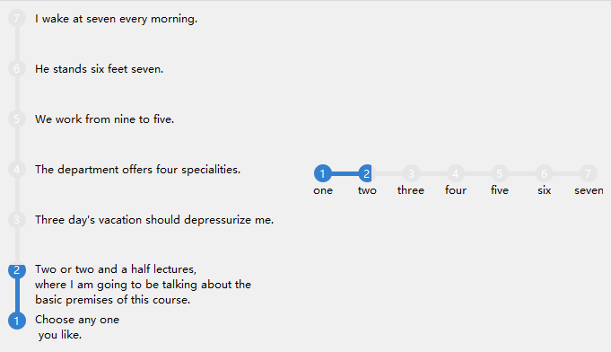

QCtmStageProgressBar Class
阶段进度条. More...
| Header: | #include <QCtmStageProgressBar.h> |
| Inherits: | QWidget |
Public Functions
| QCtmStageProgressBar(QWidget *parent) | |
| virtual | ~QCtmStageProgressBar() |
| int | maximum() const |
| int | minimum() const |
| Qt::Orientation | orientation() const |
| const QBrush & | rateBackground() const |
| void | setRateBackground(const QBrush &brush) |
| void | setStageCircleRadius(int radius) |
| void | setStageCount(int count) |
| void | setStageIndexTextPen(const QPen &pen) |
| void | setText(int stage, const QString &text) |
| int | stageCircleRadius() const |
| int | stageCount() const |
| const QPen & | stageIndexTextPen() const |
| QString | text(int stage) const |
| bool | textVisible() const |
| int | value() const |
Public Slots
| void | setMaximum(int maximum) |
| void | setMinimum(int min) |
| void | setOrientation(Qt::Orientation orientation) |
| void | setRange(int minimum, int maximum) |
| void | setTextVisible(bool flag) |
| void | setValue(int value) |
Signals
| void | valueChanged(int value) |
Protected Functions
| int | doMinimumHeight() const |
| int | doMinimumWidth() const |
| QRectF | doStageRect(int index) const |
| QRectF | doTextRect(int index) const |
| virtual void | drawStage(QPainter *p, int index, const QRectF &rect, int value) const |
| virtual void | drawText(QPainter *p, int index, const QRectF &rect, const QString &text) const |
| virtual void | initStyleOption(QStyleOptionProgressBar *opt) const |
Reimplemented Protected Functions
| virtual QSize | minimumSizeHint() const override |
| virtual void | paintEvent(QPaintEvent *event) override |
| virtual QSize | sizeHint() const override |
Detailed Description
截图:

Member Function Documentation
QCtmStageProgressBar::QCtmStageProgressBar(QWidget *parent)
构造函数 parent.
[slot] void QCtmStageProgressBar::setMaximum(int maximum)
设置最大值 maximum.
Note: Setter function for property maximum.
See also maximum.
[slot] void QCtmStageProgressBar::setMinimum(int min)
设置最小值 min.
Note: Setter function for property minimum.
See also minimum.
[slot] void QCtmStageProgressBar::setOrientation(Qt::Orientation orientation)
设置进度条的朝向 orientation.
Note: Setter function for property orientation.
See also orientation().
[slot] void QCtmStageProgressBar::setRange(int minimum, int maximum)
设置进度条值范围 minimum, maximum.
See also setMaximum and setMinimum.
[slot] void QCtmStageProgressBar::setTextVisible(bool flag)
设置阶段文本是否可见 flag.
Note: Setter function for property textVisible.
See also textVisible().
[slot] void QCtmStageProgressBar::setValue(int value)
设置当前进度值 value, value 为范围外则无效.
Note: Setter function for property value.
See also value.
[signal] void QCtmStageProgressBar::valueChanged(int value)
当值 value 变化时发送该信号.
Note: Notifier signal for property value.
See also setValue.
[virtual] QCtmStageProgressBar::~QCtmStageProgressBar()
析构函数.
[protected] int QCtmStageProgressBar::doMinimumHeight() const
计算最小高度.
See also doMinimumWidth().
[protected] int QCtmStageProgressBar::doMinimumWidth() const
计算最小宽度.
See also doMinimumHeight().
[protected] QRectF QCtmStageProgressBar::doStageRect(int index) const
计算阶段圆形包围盒 index.
See also doTextRect.
[protected] QRectF QCtmStageProgressBar::doTextRect(int index) const
计算阶段文本包围盒 index.
See also doStageRect.
[virtual protected] void QCtmStageProgressBar::drawStage(QPainter *p, int index, const QRectF &rect, int value) const
绘制阶段序号文本 p, index, rect, value.
See also drawText.
[virtual protected] void QCtmStageProgressBar::drawText(QPainter *p, int index, const QRectF &rect, const QString &text) const
绘制阶段文本 p, index, rect, text.
See also drawStage.
[virtual protected] void QCtmStageProgressBar::initStyleOption(QStyleOptionProgressBar *opt) const
初始化样式选项 opt.
int QCtmStageProgressBar::maximum() const
返回最大值.
Note: Getter function for property maximum.
See also setMaximum.
int QCtmStageProgressBar::minimum() const
返回最小值.
Note: Getter function for property minimum.
See also setMinimum.
[override virtual protected] QSize QCtmStageProgressBar::minimumSizeHint() const
Qt::Orientation QCtmStageProgressBar::orientation() const
返回进度条的朝向.
Note: Getter function for property orientation.
See also setOrientation.
[override virtual protected] void QCtmStageProgressBar::paintEvent(QPaintEvent *event)
const QBrush &QCtmStageProgressBar::rateBackground() const
返回进度条背景色.
Note: Getter function for property rateBackground.
See also setRateBackground.
void QCtmStageProgressBar::setRateBackground(const QBrush &brush)
设置进度条背景色 brush.
Note: Setter function for property rateBackground.
See also rateBackground().
void QCtmStageProgressBar::setStageCircleRadius(int radius)
设置阶段节点圆形的半径像素 radius.
See also stageCircleRadius.
void QCtmStageProgressBar::setStageCount(int count)
设置阶段数量 count.
Note: Setter function for property stageCount.
See also stageCount().
void QCtmStageProgressBar::setStageIndexTextPen(const QPen &pen)
设置阶段序号文本的画笔 pen.
Note: Setter function for property stageIndexTextPen.
See also stageIndexTextPen().
void QCtmStageProgressBar::setText(int stage, const QString &text)
设置阶段 stage 的文本 text.
See also text().
[override virtual protected] QSize QCtmStageProgressBar::sizeHint() const
int QCtmStageProgressBar::stageCircleRadius() const
返回阶段节点圆形的半径像素.
See also setStageCircleRadius.
int QCtmStageProgressBar::stageCount() const
返回阶段数量.
Note: Getter function for property stageCount.
See also setStageCount.
const QPen &QCtmStageProgressBar::stageIndexTextPen() const
返回阶段序号文本的画笔.
Note: Getter function for property stageIndexTextPen.
See also setStageIndexTextPen.
QString QCtmStageProgressBar::text(int stage) const
返回阶段 stage 的文本.
See also setText.
bool QCtmStageProgressBar::textVisible() const
返回阶段文本是否可见.
Note: Getter function for property textVisible.
See also setTextVisible.
int QCtmStageProgressBar::value() const
返回当前进度.
Note: Getter function for property value.
See also setValue.